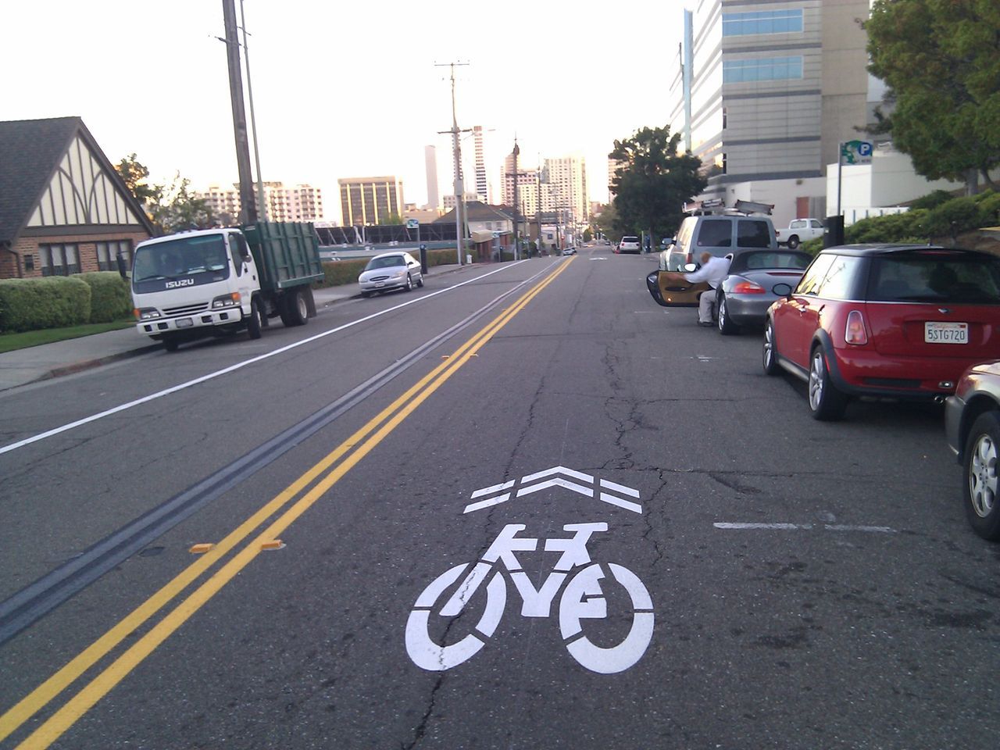
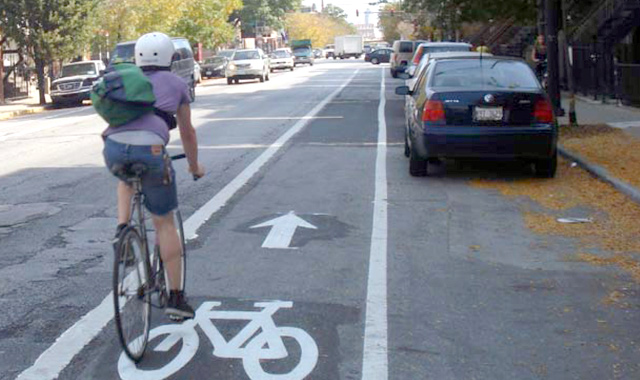
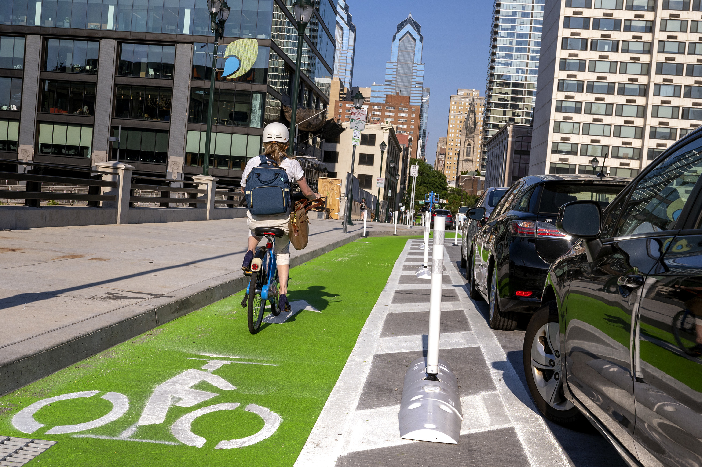

Bike Lanes
scroll downSharrows
Sharrows are roads with markings that indicate the use of the road by cyclists. These markings alert drivers of the presence of cyclists and encourage cyclists to use the full lane. Sharrows are often used for roads which are too thin to accommodate both a car lane and a bike lane. Sharrows can prevent traffic accidents but still pose a risk to cyclists, since they offer no protection from motor vehicles. Because of this, many cyclists prefer to ride on the sidewalk, eliminating the point of the sharrow.
Shared Bus Lanes

Shared bus lanes are lanes dedicated to the shared use of buses and bikes. Even though a shared bus lane is safer than no dedicated lane at all, the presence of buses may be uncomfortable to some cyclists. Cars are also allowed to merge into the bus lane to turn, which poses a risk of collision.
Conventional Bike Lanes
Conventional bike lanes serve as separate lanes for cyclists only but with no physical protection from motor vehicles. They are used on wider roads where the speed of motor vehicles are faster, offering cyclists a much less hostile environment. However, cars often park in conventional bike lanes, forcing cyclists to merge into the road or ride on the sidewalk, which poses danger for themselves and others. If the bike lane is right next to parking, an unexpected opening of a car door, also known as "dooring", can cause cyclists to collide or swerve into traffic, causing serious injury.
Buffered Bike Lanes
Buffered bike lanes are conventional bike lanes with buffer space between the car lane or parking and the bike lane. The greater distance from cars gives cyclists a sense of safety. The wider space also allows for cyclists to pass each other.
Protected Bike Lanes
Protected bike lanes are bike lanes with a physical barrier, such as poles or a curb, that separates the bike lane from the car lane and protects cyclists from motor vehicles. The physical barriers prevent drivers from parking on the bike lane, ensuring cyclists' safety and speed.
